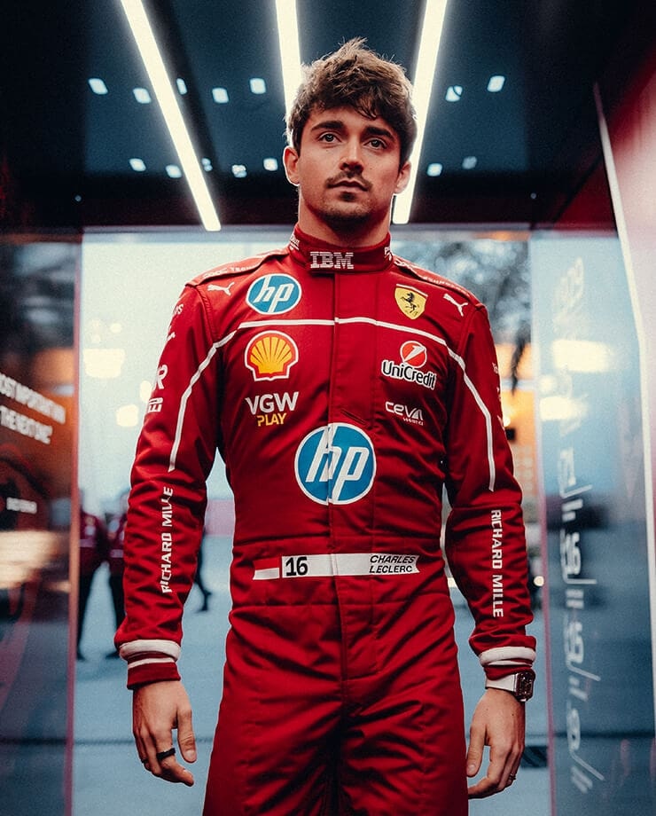

Шарль Марк Ерве Персиваль Леклер (фр. Charles Marc Hervé Perceval Leclerc; нар. 16 жовтня 1997) — монегаскський автогонщик,
пілот Формули-1 що виступає за команду Феррарі. Чемпіон GP3 в 2016 році і Формули-2 в 2017.
Леклер почав свою кар'єру в 2005 з картингу. У 2005, 2006 і 2008 роках він ставав чемпіоном французької серії PACA Championship.

Відома цитата пілота після вильоту з Гран-прі Баку у 2019 році